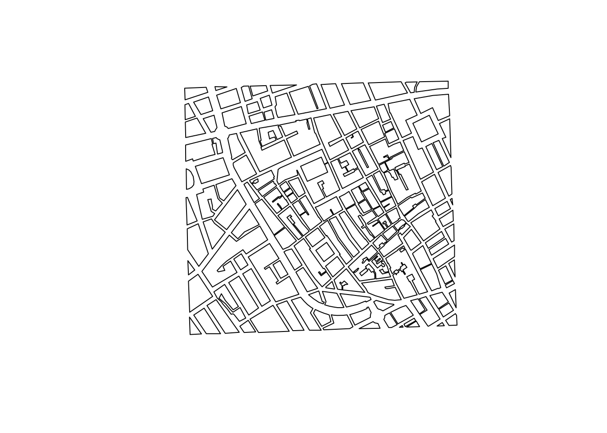
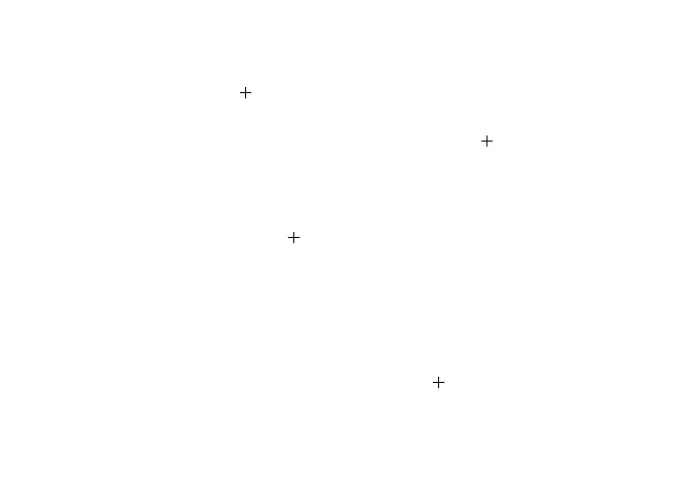
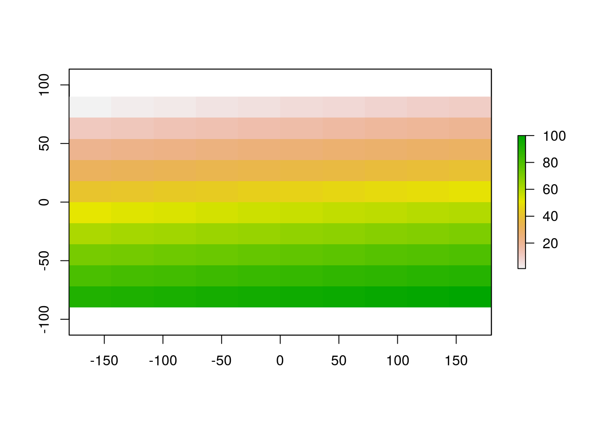
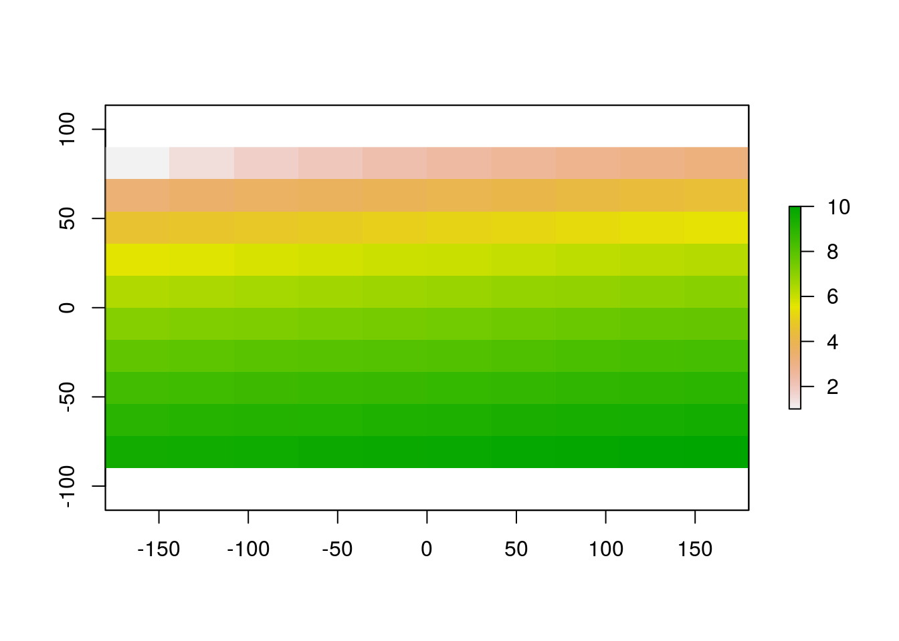
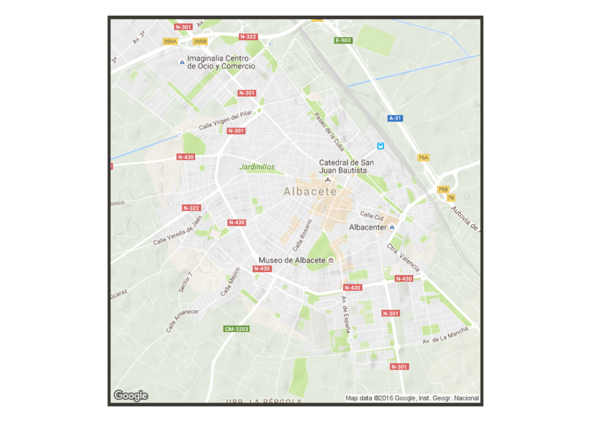
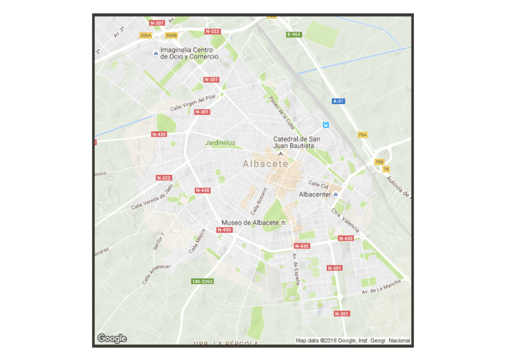

Geostat2016 Albacete: a write-up
Last week I went to GEOSTAT 2016. Given the amount of fun had at GEOSTAT 2015, expectations were high. The local organisers did not disappoint, with a week of lectures, workshops, spatial data competitions and of course lots of Geostatistics. It would be unwise to try to systematically document such a diverse range of activities, and the GEOSTAT website provides much further info. Instead this ‘miniwriteup’ is designed to summarise some of my memories from the event, and encourage you to get involved for GEOSTAT 2017.
To put things in context, the first session was a brief overview of the history of GEOSTAT. This is the 12th GEOSTAT summer school. In some ways GEOSTAT can be seen as a physical manifestation of the lively R-SIG-GEO email list. That may not sound very exciting. But there is a strong community spirit at the event and, unlike other academic conferences, the focus is on practical learning rather than transmitting research findings or theories. And the event was so much more than that.
There were 5 action packed days covering many topics within the broad field of Geostatistics. What follows is an overview of each that I went to (there were 2 streams), with links to the source material. It is hoped that this will be of use to people who were not present in person.
Day 1
After an introduction to the course and spatial data by Tom Hengl, Roger Bivand delivered a technical and applied webinar on bridges between R and other GIS software. With a focus on GRASS, we learned how R could be used as a ‘front end’ to other programs. An example using the famous ‘Cholera pump’ data mapped by John Snow was used to demonstrate the potential benefits of ‘bridging’ to other software. The data can be downloaded and partially plotted in R as follows:
u = "http://geostat-course.org/system/files/data_0.zip"
download.file(u, "data_0.zip")
unzip("data_0.zip")old = setwd("~/repos/geostat2016-rl/")
library(raster)## Loading required package: spbbo = shapefile("data/bbo.shp")
buildings = shapefile("data/buildings.shp")
deaths = shapefile("data/deaths.shp")
b_pump = shapefile("data/b_pump.shp")
nb_pump = shapefile("data/nb_pump.shp")
plot(buildings)
setwd(old)In the afternoon Robert Hijmans gave a high level overview of software for spatial data analysis, with a discussion of the Diva GIS software he developed and why he now uses R for most of his geospatial analysis.
The talk touched on the gdistance package, and many others. Robert showcased the power of R for understanding major civilisational problems such as the impacts of climate change on agriculture. His animated global maps of agricultural productivity and precipitation showed how R can scale to tackle large datasets, up to the global level involving spatial and temporal data simultaneously.
There were a few political asides. Robert mentioned how agrotech giant Monsanto paid almost $1 billion for a weather prediction company. He detoured deftly through a discussion of ‘big data’, making the observation that often ensembles of models can provide better predictions than any single model working on its own, with political analogies about the importance of democracy.
More examples included health and estimates of dietary deficiencies at high levels of geographic resolution. A paper showing fish and fruit consumption across Rwanda illustrated how map making in R, used intelligently, can save lives.
It was revealing to learn how Robert got into R. While he was working at the International Rice Research Institute. “It forces you to write scripts.” This is good for ensuring reproducibility, a critical component of scientific research. It encourages you to focus on and understand the data primarily, rather than visualising it. On the other hand, R is not always the fastest way to do things, although “people often worry too much about this”. Your time is more important than your computers, so setting an analysis running is fine. Plus there are ways to make things run faster, as mentioned in a book that I’m working on, Efficient R Programming.
R is great if you use it every data, but if you only use it less than once a week it becomes difficult.
If you just want a one-off spatial analysis data program, Robert recommended QGIS. After a brief overview of spatial data in R, Robert moved on to talk about the raster package, which he developed. This package was developed to overcome some of the limitations with sp, the foundational package for spatial data in R.
A final resource that Robert promoted was RSpatial.org, a free online resource for teaching R as a command line GIS.
Edzer Pebesmer delivered the final session of the first day, on Free and Open Source Software (FOSS) for Geoinformatics and Geosciences. After the highly technical final C++ examples from the previous talk, I was expecting a high level overview of the landscape. Instead Edzer went straight in to talk about source code, the raw material that defines all software. The fundamental feature of open source software is that its source code is free, and will remain free.
Day 2
The second day of the course was divided in two: stream A focussed on environmental modelling and stream B compositional data. I attended the environmental modelling course taught by Robert Hijmans. The course was based on his teaching material at rspatial.org and can be found online.
We started off by looking at the fundamental data structures underlying spatial data in R. Why? It’s useful to be able to create simple example datasets from scratch, to understand them.
library(sp)
x <- c(4,7,3,8)
y <- c(9,6,12,11)
xy <- data.frame(x, y)
SpatialPoints(xy)## class : SpatialPoints
## features : 4
## extent : 3, 8, 6, 12 (xmin, xmax, ymin, ymax)
## coord. ref. : NAd = data.frame(v1 = 1:4, v2 = LETTERS[1:4])
spd = SpatialPointsDataFrame(coords = xy, data = d)
plot(spd)
The basic functions of the raster package are similar.
library(raster)
r = raster(nc = 10, nr = 10)
values(r) = 1:ncell(r)
plot(r)
as.matrix(r)## [,1] [,2] [,3] [,4] [,5] [,6] [,7] [,8] [,9] [,10]
## [1,] 1 2 3 4 5 6 7 8 9 10
## [2,] 11 12 13 14 15 16 17 18 19 20
## [3,] 21 22 23 24 25 26 27 28 29 30
## [4,] 31 32 33 34 35 36 37 38 39 40
## [5,] 41 42 43 44 45 46 47 48 49 50
## [6,] 51 52 53 54 55 56 57 58 59 60
## [7,] 61 62 63 64 65 66 67 68 69 70
## [8,] 71 72 73 74 75 76 77 78 79 80
## [9,] 81 82 83 84 85 86 87 88 89 90
## [10,] 91 92 93 94 95 96 97 98 99 100q = sqrt(r)
plot(q)
x = q + r
s = stack(r, q, x)
ss = s * r # r is recycled so each layer is multiplied by r
1:3 * 2 # here 2 is recycled## [1] 2 4 6Raster also provides simple yet powerful functions for manipulating and analysing raster data, including crop(), merge() for manipulation and predict(), focal() and distance(). predict() is particularly interesting as it allows raster values to be estimated using any of R’s powerful statistical methods.
library(dismo)
g = gmap("Albacete, Spain", scale = T, lonlat = T)## Loading required namespace: XMLplot(g, interpolate = T) 

dismo::geocode("Universidad Castilla la Mancha")## originalPlace
## 1 Universidad Castilla la Mancha
## interpretedPlace longitude
## 1 Paseo Universidad, 13005 Ciudad Real, Cdad. Real, Spain -3.921711
## latitude xmin xmax ymin ymax uncertainty
## 1 38.99035 -3.922007 -3.919309 38.98919 38.99189 131Day 3
The third day started with a live R demo by Edzer Pebesmer on space-time data. Refreshingly for a conference primarily on spatial data, it started with an in-depth discussion of time. While base R natively supports temporal units (knowing the difference between days and seconds, for example) it does not know the difference between metres and miles.
This led to the creation of the units library, an taster of which is shown below:
install.packages("units")library(units)
m = with(ud_units, m)
s = with(ud_units, s)
km = with(ud_units, km)
h = with(ud_units, h)
x = 1:3 * m/sThe rest of the day was spent analysing a range of spatio-temporal datasets using spacetime, trajectories and rgl for interactive 3d spacetime plots.
In the parallel session there were sessions on CARTO and the R gvSIG bridge.
Day 4
Day 4 was a highlight for me as I’ve wanted to learn how to use the INLA package for ages. It was explained lucidly by Marta Blangiardo and Michela Cameletti, who have written an excellent book on the subject, which has a website that I recommend checking out. Their materials can be found here: http://geostat-course.org/node/1330 .
In parallel to this there was a session on Spatial and Spatiotemporal point process analysis in R data in R by Virgilio Gomez Rubio and one on automated spatial prediction and visualisation by Tom Hengl.
Day 5
After all that intense geospatial analysis and programming activity, and a night out in Albacete for some participants, we were relieved to learn that this final day of learning was more relaxed. Furthermore, by tradition, it was largely participant-led. I gave a talk on Efficient R Programming, a book I’ve written in collaboration with Colin Gillespie; Teresa Rojos gave a fascinating talk about her research into the spatial distribution of cancer rates in Peru; and S.J. Norder gave us the low-down on the Biogeography of islands with R.
One of the most exciting sessions was the revelation of the results of the spatial prediction game. Interestingly, a team using a relatively simple approach with randomForestSRC (and ggRandomForests for visualisation) one against others who had spent hours training complex multi-level models.
Summary
Overall it was an amazing event and inspiring to spend time with so many researchers using open geospatial software for tackling pressing real world issues. Furthermore, it was great fun. I strongly recommend people dipping their toes in the sea of spatial capabilities provided by R check out the GEOSTAT website, not least for the excellent video resources to be found there.
I look forward to hearing plans for future GEOSTATs and recommend the event, and associated materials, to researchers interested in using free geospatial software for the greater good.